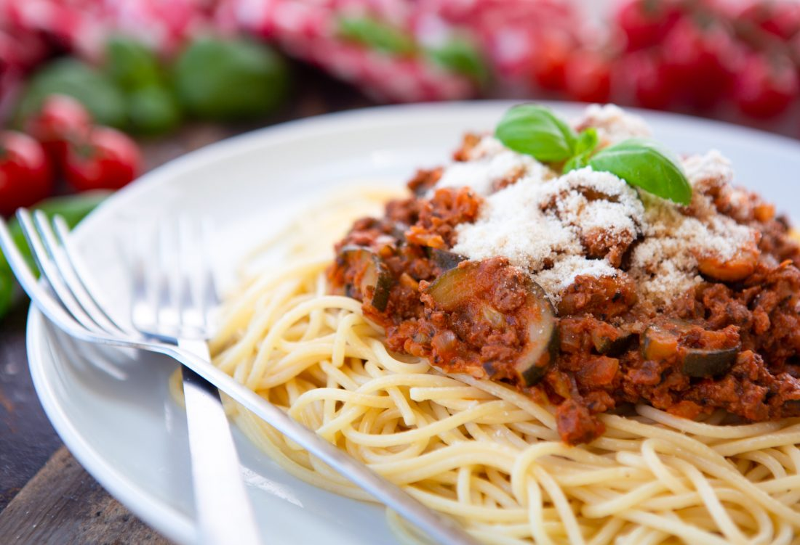

Spaghetti Bolognese

Description
Spaghetti Bolognese is the most popular classic pasta dish, and even in the vegan version this recipe is easy and quick to make and always delicious! this vegan pasta recipe is truly the best so please give it a try!
Ingredients
- 400-500g/14-18 oz wholewheat spaghetti
- 2 tbsp olive oil
- 1 large onion, diced
- 1 stick celery, finely sliced
- 3 cloves of garlic, crushed
- ½ red pepper, diced (optional)
- 1 medium courgette, chopped in half lengthways then sliced
- 100g/4oz mushrooms, chopped
- 225g/8oz veggie mince OR 1 tin whole cooked lentils
- 400ml/14fl oz passata OR 2 tins chopped tomatoes (400g)
- 1-2 tbsp tomato purée
- ½ tbsp vegan syrup (eg agave or maple) or 1 tsp sugar (optional)
- 3 tsp stock powder (eg Marigold) or 2 veg stock cubes dissolved in a very small amount boiling water
- 2 bay leaves
- 3 tsp dried basil
- 2 tsp dried oregano
- salt and pepper, to taste
Instructions
- Fry the onion in the oil until soft.
- Add the celery, red pepper (optional), courgette and mushrooms and cook until the mushrooms are golden brown.
- Add the garlic and fry for a further minute.
- If using the veggie mince option, add it now along with the tomato puree, passata, herbs, syrup and stock. If using the lentils then add all of the ingredients mentioned (apart from the veggie mince) but leave the lentils until stage 6.
- Simmer for 10-15 minutes over a low heat.
- If using the lentil option, add them now and let them cook in for a couple of minutes, stirring well.
- Serve on a bed of cooked spaghetti (allow 100g/3½ oz dry weight per person).
Optional serving suggestions: vegan Parmesan (eg Violife Prosociano, Angel Food, Follow Your Heart), chopped olives, fresh basil, fresh rocket, garlic bread, side salad.